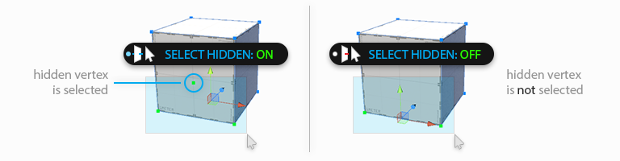
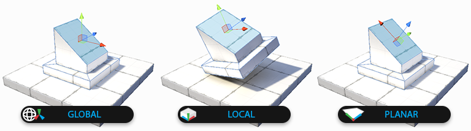
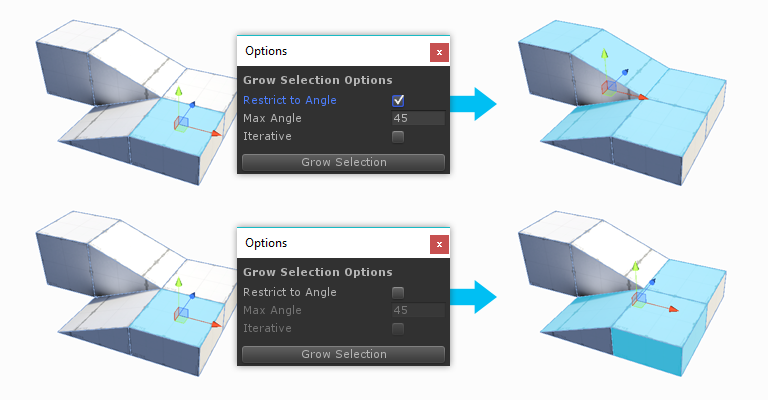
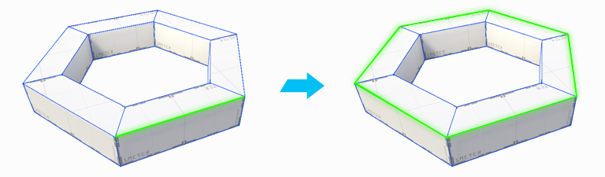
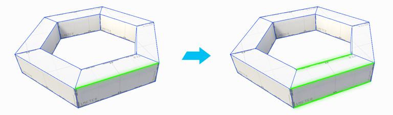

Select Hidden
Select Hidden
Determines whether hidden elements are selected or ignored, when drag-selecting. This is a toggle button, click to change modes:
| Toolbar Icon | Description |
|---|---|
| On: all elements are selectable, regardless of their visibility | |
| Off: drag selection will ignore any elements that cannot currently be seen |

 Handle Alignment
Handle Alignment
Keyboard Shortcut : P
Choose how the scene handles will be oriented when selecting elements. This is a toggle button; click to change modes:
| Toolbar Icon | Description |
|---|---|
| Global: Similar to a compass, the handle orientation is always the same, regardless of local rotation. | |
| Local: Similar to "left vs right", handle orientation is relative the object's rotation. | |
| Planar: This special mode aligns the handles to exact normal direction of the selected face. |

 Grow Selection
Grow Selection
Keyboard Shortcut: ALT G
Expands the selection outward to adjacent faces, edges, or vertices.
 Options:
Options:
| Setting | Description |
|---|---|
| Restrict To Angle | Only Grow Selection to faces within a specified angle |
| Max Angle | The angle to use when Restrict to Angle is On |
| Iterative | Only Grow Selection to adjacent faces, with each button press |

Shrink Selection
Keyboard Shortcut : ALT SHIFT G
Does the opposite of Grow Selection: removes the elements on the perimeter of the current selection.

 Invert Selection
Invert Selection
Keyboard Shortcut : CTRL SHIFT I
Selects the inverse of the current selection. All unselected elements will become selected, the current selection will be unselected.

 Select Edge Loop
Select Edge Loop
Keyboard Shortcut : ALT L
Selects an edge loop from each selected edge.

 Select Edge Ring
Select Edge Ring
Keyboard Shortcut : ALT R
Selects a ring from each selected edge.

 Select Face Loop
Select Face Loop
Keyboard Shortcut : ALT L Shift + Double Click
Selects a face loop from each selected face. Faces are only considered to be part of a loop if they contain exactly 4 sides.
 Select Face Ring
Select Face Ring
Keyboard Shortcut : ALT R Control + Double Click
Selects a face ring from each selected face. Faces are only considered to be part of a ring if they contain exactly 4 sides.

 Select Hole
Select Hole
With an open vertex or edge selected, click Select Hole to select all elements along opening.
With no elements selected, clicking Select Hole will automatically select all holes in the selected object.
 Select by Material
Select by Material
Click to select all faces on this object, which use the same material as the selected face.
 Select by Vertex Color
Select by Vertex Color
Click to select all faces on this object, which have the same vertex color as the selected face.

 Shift Modifier
Shift Modifier
Choose how holding the SHIFT key will affect selection, when clicking or drag-selecting:
| Toolbar Icon | Description |
|---|---|
| Add: always add to the selection | |
| Subtract: always subtract from the selection | |
| Difference: unselected elements are added, selected elements are subtracted |
 Selection Rect Mode
Selection Rect Mode
Choose whether drag selection should only select elements inside the drag-rect (Complete), or also elements intersected by the drag-rect.
| Toolbar Icon | Description |
|---|---|
| Complete: Only select elements entirely within the drag-rect | |
| Intersect: Select both occluded and intersected elements |